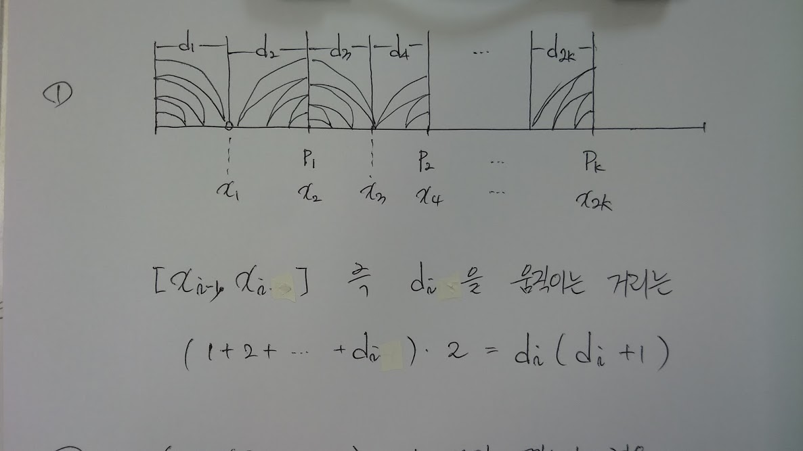
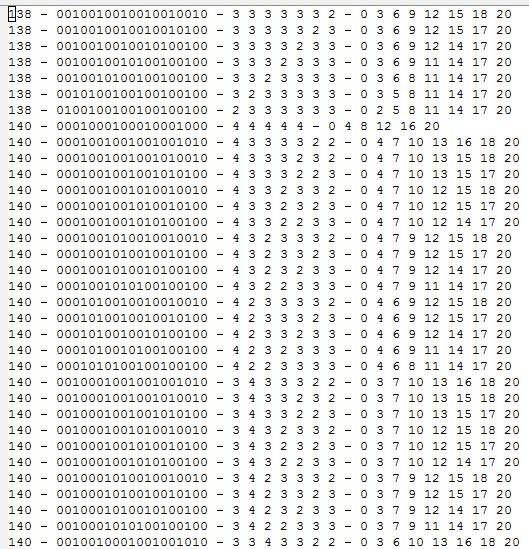
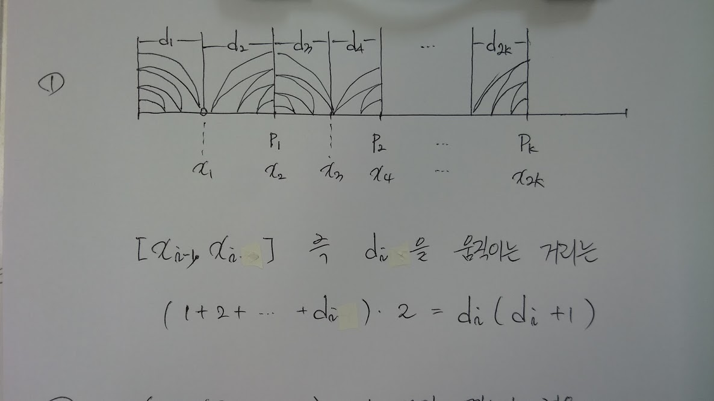
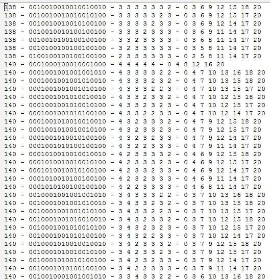
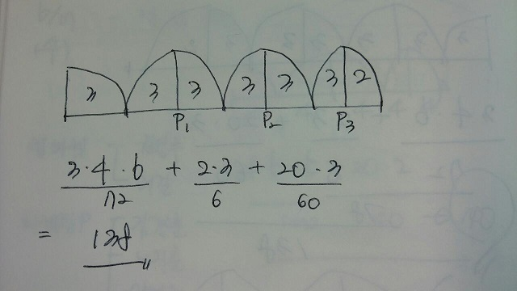
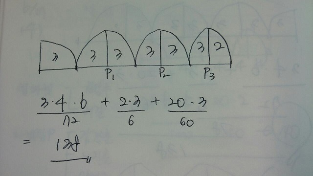

러시아 페인트공 알고리즘
6/16/2015
러시아 페인트공 알고리즘 이란 게 있다.
약술하자면 벽에 페인트를 칠하는 일을 하는 노동자가 첫날은 100의 일을 했다면 둘째 날은 50, 그 다음날은 20으로 날짜가 지남에 따라 일하는 양이 급격히 줄어들었고 그 이유를 묻자 "나도 어쩔 수 없다, 점점 페인트 통이 멀어지니까" 라고 답했다는 이야기다.
결국 적절한 시점에 페인트 통을 옮겨라 가 전략이고 너무나 뻔한 이야기이기므로 유머가 될 수 있겠다. (인종적 편견은 잠시 덮어두자)
약술하자면 벽에 페인트를 칠하는 일을 하는 노동자가 첫날은 100의 일을 했다면 둘째 날은 50, 그 다음날은 20으로 날짜가 지남에 따라 일하는 양이 급격히 줄어들었고 그 이유를 묻자 "나도 어쩔 수 없다, 점점 페인트 통이 멀어지니까" 라고 답했다는 이야기다.
결국 적절한 시점에 페인트 통을 옮겨라 가 전략이고 너무나 뻔한 이야기이기므로 유머가 될 수 있겠다. (인종적 편견은 잠시 덮어두자)
요즈음 충원을 위해 면접을 진행하면서 몇년째 매번 같은 질문을 반복하는 것에 지쳐, 좀 다른 문제를 내 볼까 라는 생각이 들었다.
그러다 러시아 페인트공 알고리즘이 생각났고 그렇다면 어떻게 페인트 통을 옮기면 이동 거리를 최소화할 수 있을지가 궁금해졌다.
그러다 러시아 페인트공 알고리즘이 생각났고 그렇다면 어떻게 페인트 통을 옮기면 이동 거리를 최소화할 수 있을지가 궁금해졌다.
문제는 다음과 같이 정리해 보았다.
페인트 통이 거쳐가는 포인트를 \(P_{1}\) 부터 \(P_{k}\) 라고 하면
\(0\) 과 \(P_{1}, P_{1}\) 과 \(P_{2}, \ldots P_{k}\) 와 \(20\) 사이에 각 페인트 통이 가진 영역의 끝점인 \(x_{1}, x_{2}, \ldots x_{2k}\) 을 잡을 수 있다.
결국 페인트공이 움직이는 거리는 아래 그림의 \(d_{1}, d_{2}, \ldots d_{2k}, d_{2k+1}\) 를 왕복하는 거리의 합이 된다.
\(P_{k}\) 까지의 부분합은 \( d_{1}(d_{1}+1) + d_{2}(d_{2}+1) + \ldots + d_{k}(d_{k}+1)\) 이다.

\(P_{2k}\) 부터 20m 지점인 끝 부분의 경우 페인트통을 끝에 옮기는지 여부에 따라 페인트통의 옮긴 횟수가 달라진다.
옮기는 경우 즉 \(d_{i} (i=1, 2, \ldots N)\) 에서 \(N\)이 짝수였다면 페인트 통을 \(\frac{N}{2}\) 번 움직이는 것이 되고 \(20*(\frac{N}{2})\) m가 페인트통 이동으로 인해 추가된 거리가 된다.
\(N\)이 홀수인 경우 \(\frac{(N-1)}{2}\)회 움직이게 되므로 \(20*\frac{(N-1)}{2}\) m 를 추가한다.
위 내용을 표현한 코드가 painting.pl 이고
거리 순으로 결과값을 정렬한 결과값은

가 된다.
* 페인트를 칠할 담의 길이는 20m내가 생각하는 풀이는 아래와 같다.
* 페인트 통은 시작 지점에 준비되어 있다.
* 1m의 담을 칠한 다음에는 페인트를 도로 묻히려 페인트 통으로 가야 한다.
* 페인트 통을 움직이는 경우, 옮긴 거리에 무관하게 20m 를 움직인 것으로 계상한다.
페인트 통이 거쳐가는 포인트를 \(P_{1}\) 부터 \(P_{k}\) 라고 하면
\(0\) 과 \(P_{1}, P_{1}\) 과 \(P_{2}, \ldots P_{k}\) 와 \(20\) 사이에 각 페인트 통이 가진 영역의 끝점인 \(x_{1}, x_{2}, \ldots x_{2k}\) 을 잡을 수 있다.
결국 페인트공이 움직이는 거리는 아래 그림의 \(d_{1}, d_{2}, \ldots d_{2k}, d_{2k+1}\) 를 왕복하는 거리의 합이 된다.
\(P_{k}\) 까지의 부분합은 \( d_{1}(d_{1}+1) + d_{2}(d_{2}+1) + \ldots + d_{k}(d_{k}+1)\) 이다.

\(P_{2k}\) 부터 20m 지점인 끝 부분의 경우 페인트통을 끝에 옮기는지 여부에 따라 페인트통의 옮긴 횟수가 달라진다.
옮기는 경우 즉 \(d_{i} (i=1, 2, \ldots N)\) 에서 \(N\)이 짝수였다면 페인트 통을 \(\frac{N}{2}\) 번 움직이는 것이 되고 \(20*(\frac{N}{2})\) m가 페인트통 이동으로 인해 추가된 거리가 된다.
\(N\)이 홀수인 경우 \(\frac{(N-1)}{2}\)회 움직이게 되므로 \(20*\frac{(N-1)}{2}\) m 를 추가한다.
위 내용을 표현한 코드가 painting.pl 이고
거리 순으로 결과값을 정렬한 결과값은

가 된다.
최소 거리를 가지는 경우의 페인트통 이동 경로는 아래와 같다.


꼬릿말 1. 원래 문제를 만들 때는 별 생각없이 100m 의 담으로 지정했는데 풀다 보니 \(x_{i}\) 를 결정하는 방법이 \(2^{100}\) 이라는 어마무시한 경우의 수가 나와서 포기가 빠른 남자 답게 리저너블한 20으로 숫자를 바꾸었다.
꼬릿말 2. 면접이라는 압박 속에서 이런 문제를 마음 편히 풀어낼 사람이 얼마나 있을까 란 생각에 그냥 물어 보던 면접 문제나 계속 물어 볼 생각이다.